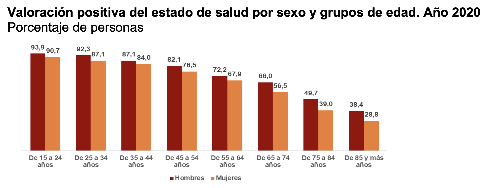

¿Qué es una Enfermedad Crónica?

HABITS, cómo os presentamos anteriormente, se centra en enfermedades crónicas. ¿Pero qué es una enfermedad crónica? Muchas veces nos hacemos esta pregunta y no sabemos cómo definirla. Las enfermedades crónicas se definen como una enfermedad o afección que dura 3 meses o más y que puede ir empeorando con el tiempo.
En la última Encuesta Europea de Salud en España (EESE) realizado durante 2019-2020 y publicada en el año 2021, la cual tiene como objetivo obtener información del estado de salud de sus habitantes se observa que aproximadamente el 75% de la población mayor de 15 años refiere un estado de salud bueno o muy bueno. Hay que tener en cuenta que cuando más mayor es, está percepción empeora. La población más joven refiere más de un 90% que tiene un estado de salud bueno o muy bueno y la población de 85 años o más únicamente el 30% refiere este estado de buena salud. Si observamos el gráfico vamos perdiendo calidad de vida a medida que nos hacemos mayores.

Otro dato interesante que nos aporta esta encuesta EESE es que observa que un 54,4% de la población de más de 15 años ha referido un problema de salud crónico en los últimos 12 meses. Así que los números que os estamos presentando son importantes.
Tal es su importancia que en el año 2017 la Sociedad Española de Medicina de Familia y Comunitaria (semFyC) publicaba un artículo titulado «Poca cama, poco plato y mucha suela de zapato». ¿A qué se refiere? Pues que muchas enfermedades crónicas pueden mejorar sus síntomas con ejercicio físico. ¡En concreto 26 enfermedades! Así que vamos a por ello. Si tienes una enfermedad crónica asesórate por un experto, seguro que los síntomas mejoran o bien la progresión será más lenta.
Referencias:
https://www.ine.es/prensa/eese_2020.pdf
https://www.semfyc.es/ejercicio-fisico-medicina-26-enfermedades-cronicas-donde-prescribirlo